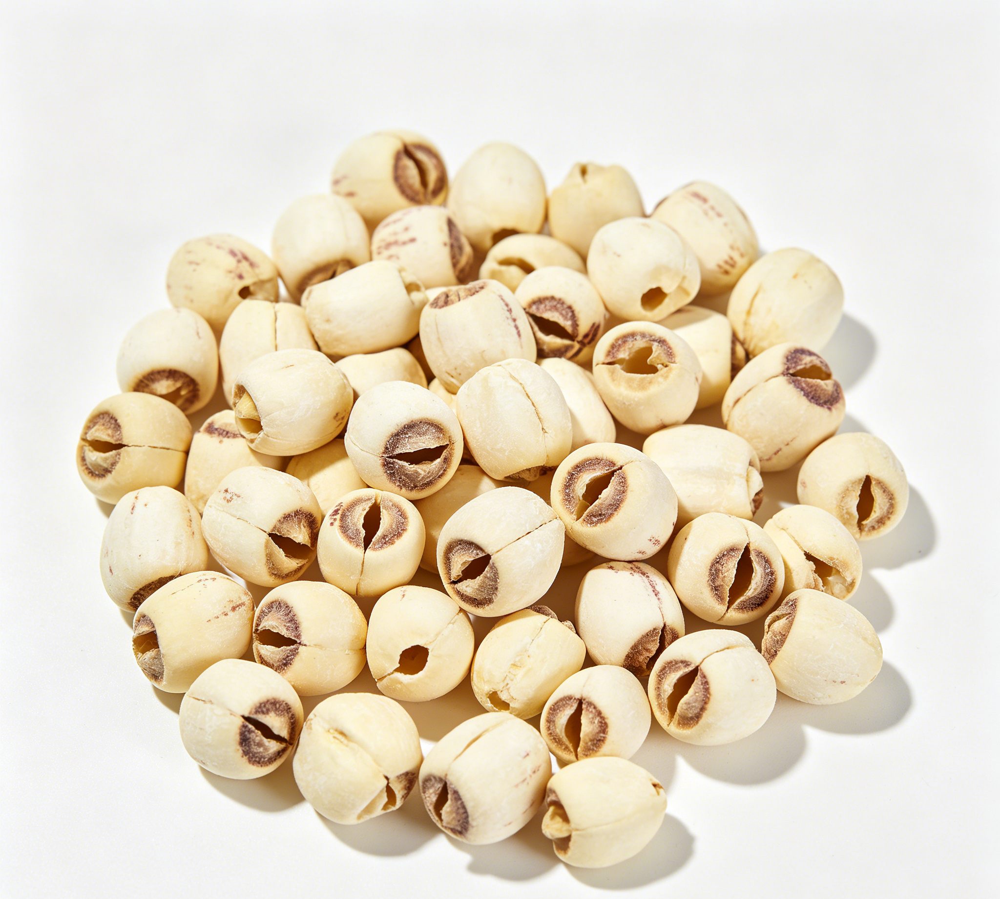

📋 基本信息
中文名莲子
拉丁名Nelumbo nucifera Gaertn.
英文名Lotus Seed
产地科属：睡莲科（Nelumbonaceae）莲属（Nelumbo），拉丁学名Nelumbo nucifera Gaertn.。主产地：湖南（湘潭'湘莲'）、湖北、福建（建宁'建莲'为核心道地产区）、江西（广昌）、江苏、浙江等地，多为人工栽培的水生植物，全国南方各省广泛种植。【《中华本草》及道地药材资料】
性状本品略呈椭圆形或类球形，长1.2～1.8cm，直径0.8～1.4cm。表面浅黄棕色至红棕色，有细纵纹和较宽的脉纹。一端中心呈乳头状突起，深棕色，多有裂口，其周边略下陷。质硬，种皮薄，不易剥离。子叶2，黄白色，肥厚，中有空隙，具绿色莲子心。气微，味甘、微涩；莲子心味苦。【《中国药典》2020年版一部】
用法用量6～15g。【《中国药典》2020年版一部】
贮藏置干燥处，防蛀。【《中国药典》2020年版一部】
☯ 传统属性
四气平
五味甘、涩
归经脾、肾、心经
功能主治补脾止泻，止带，益肾涩精，养心安神。用于脾虚泄泻，带下，遗精，心悸失眠。【《中国药典》2020年版一部】
禁忌症中满痞胀及大便燥结者忌服（本品有收涩之性，大便秘结者不宜）。【《中华本草》及临床中药学工具书】
毒性莲子作为食品安全性很高。因其收涩，过量食用可致腹胀、大便干结，便秘者加重；干莲子淀粉含量高，大量食用可致消化不良、产气；市售糖渍、蜜饯莲子含糖量高，不利于血糖控制；莲子心性苦寒，脾胃虚寒者长期大量食用带心莲子可致胃脘不适、腹泻。药用剂量6～15g范围内未见明显毒性报道。
适宜体质气虚质、平和质、阴虚质
适宜证型气虚证、脾胃气虚证、阴虚证、肺阴虚证
🔬 现代研究
主要成分莲子富含淀粉（约60%以上）、蛋白质（约17%，含多种氨基酸）、脂肪（约2%）及棉子糖等寡糖；功能成分包括黄酮类（槲皮素、金丝桃苷、芦丁、芸香苷、木犀草苷等）、水溶性多糖、磷脂；生物碱类主要集中于莲子心（莲心碱、异莲心碱、甲基莲心碱等）。每100g干莲子约含钙87mg、磷550mg，并富含钾、镁及B族维生素、尼克酸等。【公开营养成分与成分研究文献】
药理作用①抗氧化、抗衰老：莲子黄酮、多酚及多糖可清除自由基、抑制脂质过氧化；②增强免疫：莲子多糖能提高机体非特异性与特异性免疫功能；③镇静安神：对中枢神经系统有轻度抑制作用，传统用于心悸失眠；④心血管作用：所含生物碱（莲心碱等，主要来自莲心）有抗心律失常、降血压作用报道；⑤降血糖：动物实验中莲子多糖与黄酮显示改善糖耐量作用；⑥另有抗肿瘤、抗缺血-再灌注损伤、保护肝肾、调节肠道菌群等报道。【百度百科引用文献及公开科研文献综述】
食疗功效莲子甘平补脾、涩能固下，素有'脾之果'之称，《神农本草经》列为上品，谓'主补中，养神，益气力'。食疗上心、脾、肾三脏同补：健脾止泻（脾虚便溏）、益肾固精（遗精、带下）、养心安神（失眠多梦），并能交通心肾。性平力缓，补而不峻、涩而不燥，适合长期少量食用，是八宝粥、四神汤、银耳莲子羹等经典食疗方的核心原料。
食养禁忌
🏭 产品形态与潜在功能
推荐形态
粉末丸剂干果
潜在功能